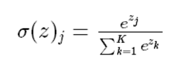
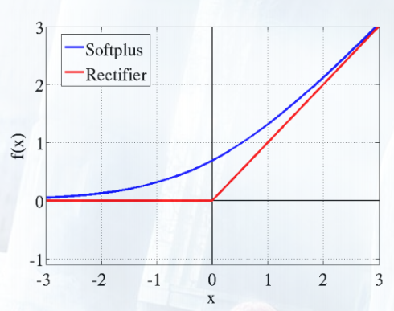

<!DOCTYPE html>
<html lang="zh">
<head><meta name="generator" content="Hexo 3.8.0">
    <meta charset="utf-8">
    
    <title>深度学习_基本概念 | FEI&#39;s Blog</title>
    
    
        <meta name="keywords" content="deep_learning">
    
    <meta name="viewport" content="width=device-width, initial-scale=1, maximum-scale=1">
    <meta name="description" content="深度学习应该了解的内容。">
<meta name="keywords" content="deep_learning">
<meta property="og:type" content="article">
<meta property="og:title" content="深度学习_基本概念">
<meta property="og:url" content="http://ff120.github.io/hexoblog/2017/04/18/技术/机器学习/深度学习/深度学习_基本概念/index.html">
<meta property="og:site_name" content="FEI&#39;s Blog">
<meta property="og:description" content="深度学习应该了解的内容。">
<meta property="og:locale" content="zh-Hans">
<meta property="og:image" content="http://ff120.github.io/hexoblog/2017/04/18/技术/机器学习/深度学习/深度学习_基本概念/2017-05-11_102343.png">
<meta property="og:image" content="http://ff120.github.io/hexoblog/2017/04/18/技术/机器学习/深度学习/深度学习_基本概念/2017-05-11_104215.png">
<meta property="og:image" content="http://ff120.github.io/hexoblog/2017/04/18/技术/机器学习/深度学习/深度学习_基本概念/2017-05-11_104735.png">
<meta property="og:image" content="http://ff120.github.io/hexoblog/2017/04/18/技术/机器学习/深度学习/深度学习_基本概念/2017-05-11_105852.png">
<meta property="og:image" content="http://ff120.github.io/hexoblog/2017/04/18/技术/机器学习/深度学习/深度学习_基本概念/2017-04-18_111733.png">
<meta property="og:image" content="http://ff120.github.io/hexoblog/2017/04/18/技术/机器学习/深度学习/深度学习_基本概念/2017-04-18_111848.png">
<meta property="og:image" content="http://ff120.github.io/hexoblog/2017/04/18/技术/机器学习/深度学习/深度学习_基本概念/2017-04-18_112030.png">
<meta property="og:image" content="http://ff120.github.io/hexoblog/2017/04/18/技术/机器学习/深度学习/深度学习_基本概念/2017-04-18_122122.png">
<meta property="og:image" content="http://ff120.github.io/hexoblog/2017/04/18/技术/机器学习/深度学习/深度学习_基本概念/2017-04-18_122501.png">
<meta property="og:image" content="http://ff120.github.io/hexoblog/2017/04/18/技术/机器学习/深度学习/深度学习_基本概念/2017-04-18_123014.png">
<meta property="og:image" content="http://ff120.github.io/hexoblog/2017/04/18/技术/机器学习/深度学习/深度学习_基本概念/2017-04-18_182534.png">
<meta property="og:image" content="http://ff120.github.io/hexoblog/2017/04/18/技术/机器学习/深度学习/深度学习_基本概念/2017-04-19_090342.png">
<meta property="og:image" content="http://ff120.github.io/hexoblog/2017/04/18/技术/机器学习/深度学习/深度学习_基本概念/2017-04-19_092053.png">
<meta property="og:image" content="http://ff120.github.io/hexoblog/2017/04/18/技术/机器学习/深度学习/深度学习_基本概念/2017-04-19_092904.png">
<meta property="og:image" content="http://ff120.github.io/hexoblog/2017/04/18/技术/机器学习/深度学习/深度学习_基本概念/2017-04-19_093237.png">
<meta property="og:updated_time" content="2019-03-28T00:54:58.473Z">
<meta name="twitter:card" content="summary">
<meta name="twitter:title" content="深度学习_基本概念">
<meta name="twitter:description" content="深度学习应该了解的内容。">
<meta name="twitter:image" content="http://ff120.github.io/hexoblog/2017/04/18/技术/机器学习/深度学习/深度学习_基本概念/2017-05-11_102343.png">
    

    
        <link rel="alternate" href="/atom.xml" title="FEI&#39;s Blog" type="application/atom+xml">
    

    
        <link rel="icon" href="/hexoblog/favicon.ico">
    

    <link rel="stylesheet" href="/hexoblog/libs/font-awesome/css/font-awesome.min.css">
    <link rel="stylesheet" href="/hexoblog/libs/open-sans/styles.css">
    <link rel="stylesheet" href="/hexoblog/libs/source-code-pro/styles.css">

    <link rel="stylesheet" href="/hexoblog/css/style.css">
    <script src="/hexoblog/libs/jquery/2.1.3/jquery.min.js"></script>
    <script src="/hexoblog/libs/jquery/plugins/cookie/1.4.1/jquery.cookie.js"></script>
    
    
        <link rel="stylesheet" href="/hexoblog/libs/lightgallery/css/lightgallery.min.css">
    
    
        <link rel="stylesheet" href="/hexoblog/libs/justified-gallery/justifiedGallery.min.css">
    
    
    
    


    
        <script async src="//busuanzi.ibruce.info/busuanzi/2.3/busuanzi.pure.mini.js"></script>
    
</head>
</html>
<body>
    <div id="container">
        <header id="header">
    <div id="header-main" class="header-inner">
        <div class="outer">
            <a href="/hexoblog/" id="logo">
                <i class="logo"></i>
                <span class="site-title">FEI&#39;s Blog</span>
            </a>
            <nav id="main-nav">
                
                    <a class="main-nav-link" href="/hexoblog/">首页</a>
                
                    <a class="main-nav-link" href="/hexoblog/archives">归档</a>
                
                    <a class="main-nav-link" href="/hexoblog/categories">分类</a>
                
                    <a class="main-nav-link" href="/hexoblog/tags">标签</a>
                
                    <a class="main-nav-link" href="/hexoblog/about">关于</a>
                
            </nav>
            
            <div id="search-form-wrap">

    <form class="search-form">
        <input type="text" class="ins-search-input search-form-input" placeholder="Rechercher">
        <button type="submit" class="search-form-submit"></button>
    </form>
    <div class="ins-search">
    <div class="ins-search-mask"></div>
    <div class="ins-search-container">
        <div class="ins-input-wrapper">
            <input type="text" class="ins-search-input" placeholder="Type something...">
            <span class="ins-close ins-selectable"><i class="fa fa-times-circle"></i></span>
        </div>
        <div class="ins-section-wrapper">
            <div class="ins-section-container"></div>
        </div>
    </div>
</div>
<script>
(function (window) {
    var INSIGHT_CONFIG = {
        TRANSLATION: {
            POSTS: 'Articles',
            PAGES: 'Pages',
            CATEGORIES: 'Catégories',
            TAGS: 'Tags',
            UNTITLED: '(Untitled)',
        },
        ROOT_URL: '/hexoblog/',
        CONTENT_URL: '/hexoblog/content.json',
    };
    window.INSIGHT_CONFIG = INSIGHT_CONFIG;
})(window);
</script>
<script src="/hexoblog/js/insight.js"></script>

</div>
        </div>
    </div>
    <div id="main-nav-mobile" class="header-sub header-inner">
        <table class="menu outer">
            <tr>
                
                    <td><a class="main-nav-link" href="/hexoblog/">首页</a></td>
                
                    <td><a class="main-nav-link" href="/hexoblog/archives">归档</a></td>
                
                    <td><a class="main-nav-link" href="/hexoblog/categories">分类</a></td>
                
                    <td><a class="main-nav-link" href="/hexoblog/tags">标签</a></td>
                
                    <td><a class="main-nav-link" href="/hexoblog/about">关于</a></td>
                
                <td>
                    
    <div class="search-form">
        <input type="text" class="ins-search-input search-form-input" placeholder="Rechercher">
    </div>

                </td>
            </tr>
        </table>
    </div>
</header>

        <div class="outer">
            
            
                <aside id="sidebar">
   
        
    <div class="widget-wrap" id="categories">
        <h3 class="widget-title">
            <span>Catégories</span>
            &nbsp;
            <a id="allExpand" href="#">
                <i class="fa fa-angle-double-down fa-2x"></i>
            </a>
        </h3>
        
        
        
         <ul class="unstyled" id="tree"> 
                    <li class="directory">
                        <a href="#" data-role="directory">
                            <i class="fa fa-folder"></i>
                            &nbsp;
                            心理学
                        </a>
                         <ul class="unstyled" id="tree"> 
                    <li class="directory">
                        <a href="#" data-role="directory">
                            <i class="fa fa-folder"></i>
                            &nbsp;
                            记忆魔法
                        </a>
                         <ul class="unstyled" id="tree">  <li class="file"><a href="/hexoblog/2019/04/03/心理学/记忆魔法/代码记忆法/">代码记忆法</a></li>  </ul> 
                    </li> 
                     </ul> 
                    </li> 
                    
                    <li class="directory open">
                        <a href="#" data-role="directory">
                            <i class="fa fa-folder-open"></i>
                            &nbsp;
                            技术
                        </a>
                         <ul class="unstyled" id="tree"> 
                    <li class="directory">
                        <a href="#" data-role="directory">
                            <i class="fa fa-folder"></i>
                            &nbsp;
                            Web开发
                        </a>
                         <ul class="unstyled" id="tree">  <li class="file"><a href="/hexoblog/2016/06/11/技术/Web开发/后台开发_How-to-install-Laravel-framework/">How to install Laravel framework</a></li>  <li class="file"><a href="/hexoblog/2016/06/11/技术/Web开发/后台开发_laravel-4-note-01/">laravel 4 note 01</a></li>  <li class="file"><a href="/hexoblog/2016/06/11/技术/Web开发/后台开发_Make-phpStorm-friendly-to-laravel/">Make phpStorm friendly to laravel</a></li>  <li class="file"><a href="/hexoblog/2016/06/11/技术/Web开发/后台开发_sublime-Text-tricks/">sublime Text tricks</a></li>  <li class="file"><a href="/hexoblog/2016/06/11/技术/Web开发/后台开发_think-php-note-01/">think php note 01</a></li>  <li class="file"><a href="/hexoblog/2016/06/11/技术/Web开发/后台开发_think-php-note-02/">think php note 02</a></li>  <li class="file"><a href="/hexoblog/2016/06/11/技术/Web开发/后台开发_think-php-note-03/">think php note 03</a></li>  <li class="file"><a href="/hexoblog/2016/06/11/技术/Web开发/后台开发_PHP编译less文件-lessphp的使用/">PHP编译less文件-lessphp的使用</a></li>  <li class="file"><a href="/hexoblog/2016/06/11/技术/Web开发/后台开发_Lavarel-后台组件frozenode的使用/">Lavarel 后台组件frozenode的使用</a></li>  <li class="file"><a href="/hexoblog/2016/06/11/技术/Web开发/后台开发_Linux常用命令/">Linux常用命令</a></li>  <li class="file"><a href="/hexoblog/2016/06/11/技术/Web开发/后台开发_Linux主机之间同步文件/">Linux主机之间同步文件</a></li>  <li class="file"><a href="/hexoblog/2016/06/11/技术/Web开发/后台开发_PHP基本操作/">PHP基本操作</a></li>  <li class="file"><a href="/hexoblog/2016/06/11/技术/Web开发/后台开发_短信验证码的实现/">短信验证码的实现</a></li>  <li class="file"><a href="/hexoblog/2016/06/11/技术/Web开发/后台开发_配置Apache支持使用HTTPS/">配置Apache支持使用HTTPS</a></li>  <li class="file"><a href="/hexoblog/2016/06/11/技术/Web开发/测试_使用Selenium测试UI/">测试_使用Selenium测试UI</a></li>  <li class="file"><a href="/hexoblog/2016/06/11/技术/Web开发/后台开发_PhpStorm常用快捷键/">PhpStorm常用快捷键</a></li>  <li class="file"><a href="/hexoblog/2016/06/11/技术/Web开发/微信开发_微信发送消息PHP-SDK/">微信发送消息PHP SDK</a></li>  <li class="file"><a href="/hexoblog/2016/06/11/技术/Web开发/微信开发_获取地理位置/">微信获取地理位置 </a></li>  <li class="file"><a href="/hexoblog/2016/06/11/技术/Web开发/微信开发_发送模板消息的代码/">微信发送模板消息的代码</a></li>  <li class="file"><a href="/hexoblog/2016/06/11/技术/Web开发/测试_Selenium-定位元素的几种方式/">测试_Selenium定位元素的几种方式</a></li>  <li class="file"><a href="/hexoblog/2016/06/11/技术/Web开发/测试_Selenium-Action/">测试_Selenium Action</a></li>  <li class="file"><a href="/hexoblog/2016/06/11/技术/Web开发/测试_Apache-JMeter的使用/">测试_Apache JMeter的使用</a></li>  <li class="file"><a href="/hexoblog/2016/06/12/技术/Web开发/后台开发_Apache-配置虚拟主机/">Apache 配置虚拟主机</a></li>  <li class="file"><a href="/hexoblog/2016/06/23/技术/Web开发/后台开发_改进PHP的var-dump-方法使之适应显示从数据库中查出来的数据/">改进PHP的var_dump()方法使之适应显示从数据库中查出来的数据</a></li>  <li class="file"><a href="/hexoblog/2016/06/23/技术/Web开发/后台开发_PHP读写XLS/">PHP读写XLS</a></li>  <li class="file"><a href="/hexoblog/2016/06/30/技术/Web开发/前端_jQuery-EasyUI-学习笔记/">JQuery EasyUI 学习笔记</a></li>  <li class="file"><a href="/hexoblog/2016/06/30/技术/Web开发/前端_bootsharp学习笔记/">Bootsharp学习笔记</a></li>  </ul> 
                    </li> 
                    
                    <li class="directory">
                        <a href="#" data-role="directory">
                            <i class="fa fa-folder"></i>
                            &nbsp;
                            专业术语
                        </a>
                         <ul class="unstyled" id="tree">  <li class="file"><a href="/hexoblog/2017/07/24/技术/专业术语/术语/">英语</a></li>  </ul> 
                    </li> 
                    
                    <li class="directory">
                        <a href="#" data-role="directory">
                            <i class="fa fa-folder"></i>
                            &nbsp;
                            大数据
                        </a>
                         <ul class="unstyled" id="tree">  <li class="file"><a href="/hexoblog/2016/06/23/技术/大数据/大数据_Spark环境下的Kmeans-Python实现/">Spark环境下的Kmeans-Python实现</a></li>  <li class="file"><a href="/hexoblog/2017/10/06/技术/大数据/大数据基础框架/">大数据基础框架</a></li>  </ul> 
                    </li> 
                    
                    <li class="directory">
                        <a href="#" data-role="directory">
                            <i class="fa fa-folder"></i>
                            &nbsp;
                            工具
                        </a>
                         <ul class="unstyled" id="tree"> 
                    <li class="directory">
                        <a href="#" data-role="directory">
                            <i class="fa fa-folder"></i>
                            &nbsp;
                            AutoHotKey
                        </a>
                         <ul class="unstyled" id="tree">  <li class="file"><a href="/hexoblog/2018/12/02/技术/工具/AutoHotKey/AutoHotKey非常有用的脚本/">AutoHotKey非常有用的脚本</a></li>  </ul> 
                    </li> 
                    
                    <li class="directory">
                        <a href="#" data-role="directory">
                            <i class="fa fa-folder"></i>
                            &nbsp;
                            Git
                        </a>
                         <ul class="unstyled" id="tree">  <li class="file"><a href="/hexoblog/2017/05/04/技术/工具/Git/GIT的使用01-基本功能/">GIT的使用01-基本功能</a></li>  <li class="file"><a href="/hexoblog/2018/07/29/技术/工具/Git/Git查询手册/">Git 手册</a></li>  </ul> 
                    </li> 
                    
                    <li class="directory">
                        <a href="#" data-role="directory">
                            <i class="fa fa-folder"></i>
                            &nbsp;
                            Hexo
                        </a>
                         <ul class="unstyled" id="tree">  <li class="file"><a href="/hexoblog/2016/06/12/技术/工具/Hexo/Hexo的使用02-同步/">Hexo的使用02-同步</a></li>  <li class="file"><a href="/hexoblog/2016/06/13/技术/工具/Hexo/Hexo的使用01-搭建/">Hexo的使用01-搭建</a></li>  <li class="file"><a href="/hexoblog/2017/04/12/技术/工具/Hexo/Hexo的使用05-Atom编辑器/">Hexo的使用05-Atom编辑器</a></li>  <li class="file"><a href="/hexoblog/2017/04/12/技术/工具/Hexo/Hexo的使用04-数学公式/">Hexo的使用04-数学公式</a></li>  <li class="file"><a href="/hexoblog/2017/05/05/技术/工具/Hexo/Hexo的使用03-迁移/">Hexo的使用03-迁移</a></li>  <li class="file"><a href="/hexoblog/2017/07/17/技术/工具/Hexo/Hexo的使用06-使用gist存储代码片段/">Hexo中使用gist存储代码片段</a></li>  </ul> 
                    </li> 
                    
                    <li class="directory">
                        <a href="#" data-role="directory">
                            <i class="fa fa-folder"></i>
                            &nbsp;
                            Visio
                        </a>
                         <ul class="unstyled" id="tree">  <li class="file"><a href="/hexoblog/2017/05/05/技术/工具/Visio/VISIO的使用01-基础入门/">VISIO的使用01-基础入门</a></li>  </ul> 
                    </li> 
                    
                    <li class="directory">
                        <a href="#" data-role="directory">
                            <i class="fa fa-folder"></i>
                            &nbsp;
                            图片处理
                        </a>
                         <ul class="unstyled" id="tree">  <li class="file"><a href="/hexoblog/2017/05/05/技术/工具/图片处理/图片处理02-一寸照片/">图片处理02-一寸照片</a></li>  <li class="file"><a href="/hexoblog/2017/05/17/技术/工具/图片处理/图片处理01-合并多张图片/">图片处理01-合并多张图片</a></li>  </ul> 
                    </li> 
                    
                    <li class="directory">
                        <a href="#" data-role="directory">
                            <i class="fa fa-folder"></i>
                            &nbsp;
                            正则表达式
                        </a>
                         <ul class="unstyled" id="tree">  <li class="file"><a href="/hexoblog/2018/07/29/技术/工具/正则表达式/正则表达式/">正则表达式</a></li>  </ul> 
                    </li> 
                    
                    <li class="directory">
                        <a href="#" data-role="directory">
                            <i class="fa fa-folder"></i>
                            &nbsp;
                            编程IDE
                        </a>
                         <ul class="unstyled" id="tree"> 
                    <li class="directory">
                        <a href="#" data-role="directory">
                            <i class="fa fa-folder"></i>
                            &nbsp;
                            Anaconda
                        </a>
                         <ul class="unstyled" id="tree">  <li class="file"><a href="/hexoblog/2017/04/18/技术/工具/编程IDE/Anaconda/Anaconda的使用01-基础/">Anaconda的使用01-基础</a></li>  </ul> 
                    </li> 
                    
                    <li class="directory">
                        <a href="#" data-role="directory">
                            <i class="fa fa-folder"></i>
                            &nbsp;
                            JetBrainsCLion
                        </a>
                         <ul class="unstyled" id="tree">  <li class="file"><a href="/hexoblog/2017/05/04/技术/工具/编程IDE/JetBrainsCLion/JetBrainsCLion的使用01-入门/">JetBrainsCLion的使用01-入门</a></li>  </ul> 
                    </li> 
                    
                    <li class="directory">
                        <a href="#" data-role="directory">
                            <i class="fa fa-folder"></i>
                            &nbsp;
                            VSCode
                        </a>
                         <ul class="unstyled" id="tree">  <li class="file"><a href="/hexoblog/2017/07/24/技术/工具/编程IDE/VSCode/Visual-Studio-Code使用技巧/">Visual Studio Code使用技巧</a></li>  </ul> 
                    </li> 
                     </ul> 
                    </li> 
                    
                    <li class="directory">
                        <a href="#" data-role="directory">
                            <i class="fa fa-folder"></i>
                            &nbsp;
                            网络软件
                        </a>
                         <ul class="unstyled" id="tree">  <li class="file"><a href="/hexoblog/2016/06/12/技术/工具/网络软件/Windows全局代理软件Proxifier/">Windows全局代理软件Proxifier</a></li>  <li class="file"><a href="/hexoblog/2016/06/12/技术/工具/网络软件/Windows手工修改路由表/">Windows手工修改路由表</a></li>  </ul> 
                    </li> 
                     </ul> 
                    </li> 
                    
                    <li class="directory">
                        <a href="#" data-role="directory">
                            <i class="fa fa-folder"></i>
                            &nbsp;
                            数据库
                        </a>
                         <ul class="unstyled" id="tree">  <li class="file"><a href="/hexoblog/2016/06/11/技术/数据库/数据库_Redis入门/">Redis入门</a></li>  <li class="file"><a href="/hexoblog/2016/06/12/技术/数据库/数据库_使用Database-Configuration-Assist-工具创建oracle数据库/">使用Database Configuration Assist 工具创建oracle数据库</a></li>  <li class="file"><a href="/hexoblog/2017/11/02/技术/数据库/SQL/">SQL</a></li>  </ul> 
                    </li> 
                    
                    <li class="directory">
                        <a href="#" data-role="directory">
                            <i class="fa fa-folder"></i>
                            &nbsp;
                            数据结构和算法
                        </a>
                         <ul class="unstyled" id="tree">  <li class="file"><a href="/hexoblog/2017/03/21/技术/数据结构和算法/算法专题_二维数组/">算法专题_二维数组</a></li>  <li class="file"><a href="/hexoblog/2017/03/21/技术/数据结构和算法/算法专题_矩阵和图/">矩阵和用矩阵表示的图的相关问题</a></li>  <li class="file"><a href="/hexoblog/2017/03/21/技术/数据结构和算法/算法专题_位运算/">算法专题_位运算</a></li>  <li class="file"><a href="/hexoblog/2017/03/23/技术/数据结构和算法/算法专题_链表/">算法专题_链表</a></li>  <li class="file"><a href="/hexoblog/2017/04/05/技术/数据结构和算法/算法专题_动态规划/">算法专题_动态规划</a></li>  <li class="file"><a href="/hexoblog/2017/04/06/技术/数据结构和算法/算法专题_图/">算法专题_图问题</a></li>  <li class="file"><a href="/hexoblog/2017/04/08/技术/数据结构和算法/做过的算法题汇总表/">做过的算法题汇总表</a></li>  <li class="file"><a href="/hexoblog/2017/04/09/技术/数据结构和算法/算法专题_二叉树/">算法专题_二叉树</a></li>  <li class="file"><a href="/hexoblog/2017/04/09/技术/数据结构和算法/算法专题_通用树结构/">算法专题_通用树结构</a></li>  <li class="file"><a href="/hexoblog/2017/04/10/技术/数据结构和算法/算法专题_大数据和空间限制/">算法专题_大数据和空间限制</a></li>  <li class="file"><a href="/hexoblog/2017/04/10/技术/数据结构和算法/算法专题_排列组合/">算法专题_排列组合</a></li>  <li class="file"><a href="/hexoblog/2017/04/11/技术/数据结构和算法/本地代码集锦/">本地代码集锦</a></li>  <li class="file"><a href="/hexoblog/2017/04/12/技术/数据结构和算法/算法专题_栈和队列/">算法专题_栈和队列</a></li>  <li class="file"><a href="/hexoblog/2017/04/16/技术/数据结构和算法/算法专题_排序算法/">算法专题_排序算法</a></li>  <li class="file"><a href="/hexoblog/2017/04/17/技术/数据结构和算法/算法专题_算法总结/">算法专题_算法总结</a></li>  <li class="file"><a href="/hexoblog/2017/05/02/技术/数据结构和算法/算法专题_一维数组/">算法专题_一维数组</a></li>  <li class="file"><a href="/hexoblog/2017/05/05/技术/数据结构和算法/算法专题_图之网络流/">算法专题_图之网络流</a></li>  <li class="file"><a href="/hexoblog/2017/05/06/技术/数据结构和算法/算法专题_图之最短路径/">算法专题_图之最短路径</a></li>  <li class="file"><a href="/hexoblog/2017/05/06/技术/数据结构和算法/算法专题_最小生成树/">算法专题_最小生成树</a></li>  <li class="file"><a href="/hexoblog/2017/05/06/技术/数据结构和算法/算法专题_霍夫曼编码/">算法专题_霍夫曼编码(哈夫曼编码)</a></li>  <li class="file"><a href="/hexoblog/2017/05/07/技术/数据结构和算法/Kickstart-Round-B-2017/">Kickstart Round B 2017</a></li>  <li class="file"><a href="/hexoblog/2017/05/08/技术/数据结构和算法/算法专题_模运算/">算法专题_模运算</a></li>  <li class="file"><a href="/hexoblog/2017/05/09/技术/数据结构和算法/算法专题_素数问题/">算法专题_素数问题</a></li>  <li class="file"><a href="/hexoblog/2017/05/11/技术/数据结构和算法/算法专题_计算几何/">算法专题_计算几何</a></li>  <li class="file"><a href="/hexoblog/2017/05/27/技术/数据结构和算法/计蒜之道2017程序设计大赛/">计蒜之道2017程序设计大赛</a></li>  <li class="file"><a href="/hexoblog/2017/05/28/技术/数据结构和算法/算法专题_字符串匹配/">算法专题_字符串匹配</a></li>  <li class="file"><a href="/hexoblog/2017/07/12/技术/数据结构和算法/四等分数组/">四等分数组</a></li>  <li class="file"><a href="/hexoblog/2017/07/12/技术/数据结构和算法/矩阵的遍历/">矩阵的遍历</a></li>  <li class="file"><a href="/hexoblog/2017/07/20/技术/数据结构和算法/N皇后问题/">N皇后问题</a></li>  <li class="file"><a href="/hexoblog/2017/07/23/技术/数据结构和算法/算法专题_线段树/">算法专题_线段树</a></li>  <li class="file"><a href="/hexoblog/2017/07/23/技术/数据结构和算法/算法专题_树状数组/">算法专题_树状数组</a></li>  <li class="file"><a href="/hexoblog/2017/07/23/技术/数据结构和算法/算法专题_并查集/">算法专题_并查集</a></li>  <li class="file"><a href="/hexoblog/2017/07/26/技术/数据结构和算法/算法专题_链表2/">算法专题_链表2</a></li>  <li class="file"><a href="/hexoblog/2017/08/06/技术/数据结构和算法/算法专题_二叉堆/">算法专题_二叉堆</a></li>  <li class="file"><a href="/hexoblog/2017/08/07/技术/数据结构和算法/算法专题_快速排序/">算法专题_快速排序</a></li>  <li class="file"><a href="/hexoblog/2017/08/07/技术/数据结构和算法/算法专题_归并排序/">算法专题_归并排序</a></li>  <li class="file"><a href="/hexoblog/2017/08/13/技术/数据结构和算法/算法专题-hihocoder/">算法专题_hihocoder</a></li>  <li class="file"><a href="/hexoblog/2017/08/17/技术/数据结构和算法/算法专题-贪心法/">算法专题_贪心法</a></li>  <li class="file"><a href="/hexoblog/2017/08/18/技术/数据结构和算法/阿里在线测评-兔子繁殖问题/">阿里笔试</a></li>  <li class="file"><a href="/hexoblog/2017/08/22/技术/数据结构和算法/今日头条-在线编程题/">今日头条_在线编程题</a></li>  <li class="file"><a href="/hexoblog/2017/08/23/技术/数据结构和算法/算法专题-字典树-Trie树/">算法专题_字典树(Trie树)</a></li>  <li class="file"><a href="/hexoblog/2017/09/23/技术/数据结构和算法/算法专题_二叉树2/">算法专题_二叉树2</a></li>  <li class="file"><a href="/hexoblog/2017/09/27/技术/数据结构和算法/手写代码-其他/">手写代码-其他</a></li>  <li class="file"><a href="/hexoblog/2017/10/03/技术/数据结构和算法/算法专题-常见题目/">算法专题_常见题目</a></li>  </ul> 
                    </li> 
                    
                    <li class="directory open">
                        <a href="#" data-role="directory">
                            <i class="fa fa-folder-open"></i>
                            &nbsp;
                            机器学习
                        </a>
                         <ul class="unstyled" id="tree"> 
                    <li class="directory open">
                        <a href="#" data-role="directory">
                            <i class="fa fa-folder-open"></i>
                            &nbsp;
                            深度学习
                        </a>
                         <ul class="unstyled" id="tree">  <li class="file"><a href="/hexoblog/2017/03/22/技术/机器学习/深度学习/深度学习_Theano使用技巧/">深度学习_Theano使用技巧</a></li>  <li class="file active"><a href="/hexoblog/2017/04/18/技术/机器学习/深度学习/深度学习_基本概念/">深度学习_基本概念</a></li>  <li class="file"><a href="/hexoblog/2017/04/18/技术/机器学习/深度学习/深度学习_利用神经网络识别手写数字/">深度学习__利用神经网络识别手写数字</a></li>  <li class="file"><a href="/hexoblog/2017/04/19/技术/机器学习/深度学习/深度学习_反向传播算法及简单实例/">深度学习_反向传播算法及简单实例</a></li>  <li class="file"><a href="/hexoblog/2017/04/19/技术/机器学习/深度学习/深度学习_Keras使用技巧/">深度学习_Keras使用技巧</a></li>  <li class="file"><a href="/hexoblog/2017/04/20/技术/机器学习/深度学习/深度学习_使用keras实现autoencoder/">深度学习_使用keras实现autoencoder</a></li>  <li class="file"><a href="/hexoblog/2017/04/20/技术/机器学习/深度学习/深度学习_卷积神经网络/">深度学习_卷积神经网络</a></li>  <li class="file"><a href="/hexoblog/2017/04/27/技术/机器学习/深度学习/深度学习_使用autoencoder自动提取特征/">深度学习_使用autoencoder自动提取特征</a></li>  <li class="file"><a href="/hexoblog/2017/05/10/技术/机器学习/深度学习/深度学习_递归神经网络(RNN)/">深度学习_递归神经网络(RNN)</a></li>  <li class="file"><a href="/hexoblog/2017/05/10/技术/机器学习/深度学习/深度学习_限制波尔茨曼向量机(RBM)/">深度学习_限制波尔茨曼向量机(RBM)</a></li>  <li class="file"><a href="/hexoblog/2017/05/12/技术/机器学习/深度学习/深度学习_TensorFlow使用技巧/">深度学习_TensorFlow使用技巧</a></li>  </ul> 
                    </li> 
                     <li class="file"><a href="/hexoblog/2016/06/16/技术/机器学习/机器学习_Scikit-Learn-ManyClassifier/">同时使用多个分类器(Scikit-Learn)</a></li>  <li class="file"><a href="/hexoblog/2016/06/16/技术/机器学习/机器学习_范数/">机器学习_范数</a></li>  <li class="file"><a href="/hexoblog/2016/06/20/技术/机器学习/机器学习_学习路线/">机器学习_学习路线</a></li>  <li class="file"><a href="/hexoblog/2016/06/20/技术/机器学习/机器学习_手写数字识别/">机器学习_手写数字识别</a></li>  <li class="file"><a href="/hexoblog/2016/07/11/技术/机器学习/机器学习_Matplolib使用技巧/">机器学习_Matplolib使用技巧</a></li>  <li class="file"><a href="/hexoblog/2017/03/22/技术/机器学习/机器学习_人脸识别/">机器学习_人脸识别</a></li>  <li class="file"><a href="/hexoblog/2017/05/04/技术/机器学习/机器学习_Matlab使用技巧/">机器学习_Matlab使用技巧</a></li>  <li class="file"><a href="/hexoblog/2017/05/11/技术/机器学习/机器学习_时间序列预测分析算法/">机器学习_时间序列预测分析算法</a></li>  <li class="file"><a href="/hexoblog/2017/05/14/技术/机器学习/机器学习_Scikit-Learn使用技巧/">深度学习_Scikit-Learn机器学习算法的使用</a></li>  <li class="file"><a href="/hexoblog/2017/05/15/技术/机器学习/机器学习_时间序列预测の广告效果预测/">机器学习_时间序列预测の广告效果预测</a></li>  <li class="file"><a href="/hexoblog/2017/05/15/技术/机器学习/机器学习_算法汇总/">机器学习_算法汇总</a></li>  <li class="file"><a href="/hexoblog/2017/05/17/技术/机器学习/机器学习_Pandas使用技巧/">深度学习_Pandas使用技巧</a></li>  <li class="file"><a href="/hexoblog/2017/05/19/技术/机器学习/机器学习_感知机/">机器学习_感知机</a></li>  <li class="file"><a href="/hexoblog/2017/05/19/技术/机器学习/机器学习_逻辑回归/">机器学习_逻辑回归</a></li>  <li class="file"><a href="/hexoblog/2017/05/22/技术/机器学习/机器学习_损失函数/">机器学习_损失函数</a></li>  <li class="file"><a href="/hexoblog/2017/06/03/技术/机器学习/机器学习_分类器性能的度量/">机器学习_分类器性能的度量</a></li>  <li class="file"><a href="/hexoblog/2017/06/15/技术/机器学习/机器学习_Scipy使用技巧/">机器学习_Scipy使用技巧</a></li>  <li class="file"><a href="/hexoblog/2017/06/15/技术/机器学习/机器学习_Python使用技巧/">深度学习_Python使用技巧</a></li>  <li class="file"><a href="/hexoblog/2017/07/23/技术/机器学习/机器学习-Numpy使用技巧/">机器学习_Numpy使用技巧</a></li>  <li class="file"><a href="/hexoblog/2017/10/15/技术/机器学习/KNN-with-C/">KNN with C++</a></li>  <li class="file"><a href="/hexoblog/2017/11/04/技术/机器学习/机器学习-绪论-基本概念/">机器学习-绪论-基本概念</a></li>  <li class="file"><a href="/hexoblog/2017/11/04/技术/机器学习/机器学习-第一章-逻辑回归/">机器学习-第一章-逻辑回归</a></li>  <li class="file"><a href="/hexoblog/2017/11/04/技术/机器学习/机器学习-第二章-决策树/">机器学习-第二章-决策树</a></li>  <li class="file"><a href="/hexoblog/2017/11/04/技术/机器学习/机器学习-第三章-朴素贝叶斯/">机器学习-第三章-朴素贝叶斯</a></li>  <li class="file"><a href="/hexoblog/2017/11/04/技术/机器学习/机器学习-第四章-支持向量机/">机器学习-第四章-支持向量机</a></li>  <li class="file"><a href="/hexoblog/2017/11/04/技术/机器学习/机器学习-第五章-最近邻/">机器学习-第五章-最近邻</a></li>  <li class="file"><a href="/hexoblog/2017/11/04/技术/机器学习/机器学习-第六章-kmeans/">机器学习-第六章-kmeans</a></li>  <li class="file"><a href="/hexoblog/2017/11/04/技术/机器学习/机器学习-第七章-感知机/">机器学习-第七章-感知机</a></li>  </ul> 
                    </li> 
                    
                    <li class="directory">
                        <a href="#" data-role="directory">
                            <i class="fa fa-folder"></i>
                            &nbsp;
                            编程语言
                        </a>
                         <ul class="unstyled" id="tree"> 
                    <li class="directory">
                        <a href="#" data-role="directory">
                            <i class="fa fa-folder"></i>
                            &nbsp;
                            C++
                        </a>
                         <ul class="unstyled" id="tree">  <li class="file"><a href="/hexoblog/2017/04/07/技术/编程语言/C++/C++语言技巧/">C++语言技巧</a></li>  </ul> 
                    </li> 
                     </ul> 
                    </li> 
                    
                    <li class="directory">
                        <a href="#" data-role="directory">
                            <i class="fa fa-folder"></i>
                            &nbsp;
                            计算机基础
                        </a>
                         <ul class="unstyled" id="tree"> 
                    <li class="directory">
                        <a href="#" data-role="directory">
                            <i class="fa fa-folder"></i>
                            &nbsp;
                            计算机网络
                        </a>
                         <ul class="unstyled" id="tree">  <li class="file"><a href="/hexoblog/2016/06/12/技术/计算机基础/计算机网络/网络_校园网多终端上网方案/">校园网多终端上网方案</a></li>  <li class="file"><a href="/hexoblog/2017/07/12/技术/计算机基础/计算机网络/计算机网络/">计算机网络</a></li>  </ul> 
                    </li> 
                     </ul> 
                    </li> 
                    
                    <li class="directory">
                        <a href="#" data-role="directory">
                            <i class="fa fa-folder"></i>
                            &nbsp;
                            认知神经科学
                        </a>
                         <ul class="unstyled" id="tree">  <li class="file"><a href="/hexoblog/2016/06/12/技术/认知神经科学/文献检索方法/">文献检索方法</a></li>  <li class="file"><a href="/hexoblog/2016/06/12/技术/认知神经科学/参考文献书写格式/">参考文献书写格式</a></li>  <li class="file"><a href="/hexoblog/2016/06/12/技术/认知神经科学/使用Python处理fMRI数据/">使用Python处理fMRI数据</a></li>  <li class="file"><a href="/hexoblog/2016/06/22/技术/认知神经科学/中英文对照/">中英文对照</a></li>  <li class="file"><a href="/hexoblog/2017/01/03/技术/认知神经科学/circos入门教程/">circos入门教程</a></li>  <li class="file"><a href="/hexoblog/2017/03/08/技术/认知神经科学/基于视频的车牌识别和流量统计/">基于视频的车牌识别和流量统计</a></li>  <li class="file"><a href="/hexoblog/2017/03/08/技术/认知神经科学/基于贝叶斯网络和隐性知识的AU识别研究/">基于贝叶斯网络和隐性知识的AU识别研究</a></li>  <li class="file"><a href="/hexoblog/2017/03/09/技术/认知神经科学/基于连接的脑信息解码研究/">基于连接信息的脑信息解码研究</a></li>  <li class="file"><a href="/hexoblog/2017/03/09/技术/认知神经科学/认知神经科学系列目录/">认知神经科学系列目录</a></li>  <li class="file"><a href="/hexoblog/2017/03/20/技术/认知神经科学/多被试多RUN批量预处理(SPM)/">多被试多RUN批量预处理(SPM)</a></li>  <li class="file"><a href="/hexoblog/2017/03/20/技术/认知神经科学/SPM预处理中的常用操作/">SPM预处理中的常用操作</a></li>  <li class="file"><a href="/hexoblog/2017/03/20/技术/认知神经科学/动态因果模型(DCM)的批量定义和估计/">动态因果模型(DCM)的批量定义和估计</a></li>  <li class="file"><a href="/hexoblog/2017/04/13/技术/认知神经科学/使用SPM做Second-Level分析/">使用SPM做Second_Level分析</a></li>  <li class="file"><a href="/hexoblog/2017/04/13/技术/认知神经科学/DCM模型的定义和估计/">DCM模型的定义和估计</a></li>  <li class="file"><a href="/hexoblog/2017/04/14/技术/认知神经科学/XJVIEW的使用技巧/">XJVIEW的使用技巧</a></li>  <li class="file"><a href="/hexoblog/2017/04/14/技术/认知神经科学/SPM中函数的修改和使用/">SPM中函数的修改和使用</a></li>  <li class="file"><a href="/hexoblog/2017/05/02/技术/认知神经科学/fMRI中常用的工具包/">fMRI中常用的工具包</a></li>  <li class="file"><a href="/hexoblog/2017/05/11/技术/认知神经科学/使用3D卷积神经神经网络提取脑成像数据的特征/">使用3D卷积神经神经网络提取脑成像数据的特征</a></li>  <li class="file"><a href="/hexoblog/2017/05/14/技术/认知神经科学/fMRI相关的资源汇总/">fMRI相关的资源汇总</a></li>  <li class="file"><a href="/hexoblog/2017/05/30/技术/认知神经科学/fMRI相关问题汇总/">fMRI相关问题汇总</a></li>  </ul> 
                    </li> 
                     </ul> 
                    </li> 
                    
                    <li class="directory">
                        <a href="#" data-role="directory">
                            <i class="fa fa-folder"></i>
                            &nbsp;
                            收藏夹
                        </a>
                         <ul class="unstyled" id="tree">  <li class="file"><a href="/hexoblog/2017/03/22/收藏夹/博客集锦/">博客收藏</a></li>  </ul> 
                    </li> 
                     </ul> 
    </div>
    <script>
        $(document).ready(function() {
            var iconFolderOpenClass  = 'fa-folder-open';
            var iconFolderCloseClass = 'fa-folder';
            var iconAllExpandClass = 'fa-angle-double-down';
            var iconAllPackClass = 'fa-angle-double-up';
            // Handle directory-tree expansion:
            // 左键单独展开目录
            $(document).on('click', '#categories a[data-role="directory"]', function (event) {
                event.preventDefault();

                var icon = $(this).children('.fa');
                var expanded = icon.hasClass(iconFolderOpenClass);
                var subtree = $(this).siblings('ul');
                icon.removeClass(iconFolderOpenClass).removeClass(iconFolderCloseClass);
                if (expanded) {
                    if (typeof subtree != 'undefined') {
                        subtree.slideUp({ duration: 100 });
                    }
                    icon.addClass(iconFolderCloseClass);
                } else {
                    if (typeof subtree != 'undefined') {
                        subtree.slideDown({ duration: 100 });
                    }
                    icon.addClass(iconFolderOpenClass);
                }
            });
            // 右键展开下属所有目录
            $('#categories a[data-role="directory"]').bind("contextmenu", function(event){
                event.preventDefault();
                
                var icon = $(this).children('.fa');
                var expanded = icon.hasClass(iconFolderOpenClass);
                var listNode = $(this).siblings('ul');
                var subtrees = $.merge(listNode.find('li ul'), listNode);
                var icons = $.merge(listNode.find('.fa'), icon);
                icons.removeClass(iconFolderOpenClass).removeClass(iconFolderCloseClass);
                if(expanded) {
                    subtrees.slideUp({ duration: 100 });
                    icons.addClass(iconFolderCloseClass);
                } else {
                    subtrees.slideDown({ duration: 100 });
                    icons.addClass(iconFolderOpenClass);
                }
            })
            // 展开关闭所有目录按钮
            $(document).on('click', '#allExpand', function (event) {
                event.preventDefault();
                
                var icon = $(this).children('.fa');
                var expanded = icon.hasClass(iconAllExpandClass);
                icon.removeClass(iconAllExpandClass).removeClass(iconAllPackClass);
                if(expanded) {
                    $('#sidebar .fa.fa-folder').removeClass('fa-folder').addClass('fa-folder-open')
                    $('#categories li ul').slideDown({ duration: 100 });
                    icon.addClass(iconAllPackClass);
                } else {
                    $('#sidebar .fa.fa-folder-open').removeClass('fa-folder-open').addClass('fa-folder')
                    $('#categories li ul').slideUp({ duration: 100 });
                    icon.addClass(iconAllExpandClass);
                }
            });  
        });
    </script>

    
    <div id="toTop" class="fa fa-angle-up"></div>
</aside>
            
            <section id="main"><article id="post-技术/机器学习/深度学习/深度学习_基本概念" class="article article-type-post" itemscope="" itemprop="blogPost">
    <div class="article-inner">
        
        
            <header class="article-header">
                
                    <div class="article-meta">
                        
    <div class="article-category">
    	<i class="fa fa-folder"></i>
        <a class="article-category-link" href="/hexoblog/categories/技术/">技术</a><i class="fa fa-angle-right"></i><a class="article-category-link" href="/hexoblog/categories/技术/机器学习/">机器学习</a><i class="fa fa-angle-right"></i><a class="article-category-link" href="/hexoblog/categories/技术/机器学习/深度学习/">深度学习</a>
    </div>

                        
    <div class="article-tag">
        <i class="fa fa-tag"></i>
        <a class="tag-link" href="/hexoblog/tags/deep-learning/">deep_learning</a>
    </div>

                        
    <div class="article-date">
        <i class="fa fa-calendar"></i>
        <a href="/hexoblog/2017/04/18/技术/机器学习/深度学习/深度学习_基本概念/">
            <time datetime="2017-04-18T03:16:47.000Z" itemprop="datePublished">2017-04-18</time>
        </a>
    </div>


                        
                            <i class="fa fa-bar-chart"></i>
                            <span id="busuanzi_container_site_pv"><span id="busuanzi_value_page_pv"></span></span>    
                        
                        
                            <div class="article-meta-button">
                                <a href="https://github.com/FF120/hexoblog/raw/master/source/_posts/技术/机器学习/深度学习/深度学习_基本概念.md"> Source </a>
                            </div>
                            <div class="article-meta-button">
                                <a href="https://github.com/FF120/hexoblog/edit/master/source/_posts/技术/机器学习/深度学习/深度学习_基本概念.md"> Edit </a>
                            </div>
                            <div class="article-meta-button">
                                <a href="https://github.com/FF120/hexoblog/commits/master/source/_posts/技术/机器学习/深度学习/深度学习_基本概念.md"> History </a>
                            </div>
                        
                    </div>
                
                
    
        <h1 class="article-title" itemprop="name">
            深度学习_基本概念
        </h1>
    

            </header>
        
        
        <div class="article-entry" itemprop="articleBody">
        
        
            
                <div id="toc" class="toc-article">
                <strong class="toc-title">Catalogue</strong>
                    <ol class="toc"><li class="toc-item toc-level-2"><a class="toc-link" href="#深度学习的应用领域"><span class="toc-number">1.</span> <span class="toc-text">深度学习的应用领域</span></a><ol class="toc-child"><li class="toc-item toc-level-3"><a class="toc-link" href="#黑白图像的自动着色"><span class="toc-number">1.1.</span> <span class="toc-text">黑白图像的自动着色</span></a></li><li class="toc-item toc-level-3"><a class="toc-link" href="#自动为电影添加声音"><span class="toc-number">1.2.</span> <span class="toc-text">自动为电影添加声音</span></a></li><li class="toc-item toc-level-3"><a class="toc-link" href="#自动机器翻译"><span class="toc-number">1.3.</span> <span class="toc-text">自动机器翻译</span></a></li><li class="toc-item toc-level-3"><a class="toc-link" href="#物体分类和检测"><span class="toc-number">1.4.</span> <span class="toc-text">物体分类和检测</span></a></li><li class="toc-item toc-level-3"><a class="toc-link" href="#手写笔迹的自动生成"><span class="toc-number">1.5.</span> <span class="toc-text">手写笔迹的自动生成</span></a></li><li class="toc-item toc-level-3"><a class="toc-link" href="#文本的自动生成"><span class="toc-number">1.6.</span> <span class="toc-text">文本的自动生成</span></a></li><li class="toc-item toc-level-3"><a class="toc-link" href="#图像理解"><span class="toc-number">1.7.</span> <span class="toc-text">图像理解</span></a></li><li class="toc-item toc-level-3"><a class="toc-link" href="#automatic-game-playing"><span class="toc-number">1.8.</span> <span class="toc-text">Automatic Game Playing</span></a></li></ol></li><li class="toc-item toc-level-2"><a class="toc-link" href="#深度学习中的概念"><span class="toc-number">2.</span> <span class="toc-text">深度学习中的概念</span></a><ol class="toc-child"><li class="toc-item toc-level-3"><a class="toc-link" href="#张量tensor"><span class="toc-number">2.1.</span> <span class="toc-text">张量(tensor)</span></a></li><li class="toc-item toc-level-3"><a class="toc-link" href="#平方误差和交叉熵"><span class="toc-number">2.2.</span> <span class="toc-text">平方误差和交叉熵</span></a></li><li class="toc-item toc-level-3"><a class="toc-link" href="#激活函数"><span class="toc-number">2.3.</span> <span class="toc-text">激活函数</span></a><ol class="toc-child"><li class="toc-item toc-level-4"><a class="toc-link" href="#tanh-激活函数"><span class="toc-number">2.3.1.</span> <span class="toc-text">tanh 激活函数</span></a></li><li class="toc-item toc-level-4"><a class="toc-link" href="#softmax-激活函数"><span class="toc-number">2.3.2.</span> <span class="toc-text">Softmax 激活函数</span></a></li><li class="toc-item toc-level-4"><a class="toc-link" href="#安装"><span class="toc-number">2.3.3.</span> <span class="toc-text">安装</span></a></li><li class="toc-item toc-level-4"><a class="toc-link" href="#在tensorflow和theano之间切换"><span class="toc-number">2.3.4.</span> <span class="toc-text">在TensorFlow和theano之间切换</span></a></li><li class="toc-item toc-level-4"><a class="toc-link" href="#安装tensorflow"><span class="toc-number">2.3.5.</span> <span class="toc-text">安装tensorflow</span></a></li><li class="toc-item toc-level-4"><a class="toc-link" href="#安装theano"><span class="toc-number">2.3.6.</span> <span class="toc-text">安装theano</span></a></li><li class="toc-item toc-level-4"><a class="toc-link" href="#keras配置文件"><span class="toc-number">2.3.7.</span> <span class="toc-text">keras配置文件</span></a></li><li class="toc-item toc-level-4"><a class="toc-link" href="#keras模型"><span class="toc-number">2.3.8.</span> <span class="toc-text">keras模型</span></a></li><li class="toc-item toc-level-4"><a class="toc-link" href="#keras编程概念"><span class="toc-number">2.3.9.</span> <span class="toc-text">keras编程概念</span></a><ol class="toc-child"><li class="toc-item toc-level-5"><a class="toc-link" href="#layers"><span class="toc-number">2.3.9.1.</span> <span class="toc-text">layers</span></a></li></ol></li></ol></li></ol></li><li class="toc-item toc-level-2"><a class="toc-link" href="#深度学习资料"><span class="toc-number">3.</span> <span class="toc-text">深度学习资料</span></a></li></ol>
                </div>
            
        
        
            <p>深度学习应该了解的内容。</p>
<a id="more"></a>
<h2 id="深度学习的应用领域">深度学习的应用领域</h2>
<p>深度学习得到越来越快的发展，这是因为深度学习是最有希望解决一些普通算法难以解决的问题，让我们来看一看都有哪些问题是目前还没有解决，但是有望可以借助深度学习方法的进步解决的。</p>
<h3 id="黑白图像的自动着色">黑白图像的自动着色</h3>
<p>我们都知道，把彩色图像变成黑白图像很容易，但是要把黑白图像变成彩色图像就不那么容易了（颜色信息从那里来？），这个问题以前都是靠<a href="https://en.wikipedia.org/wiki/Hand-colouring_of_photographs" target="_blank" rel="noopener">手工着色</a>的方式解决的，但是这样的方法费时费力还需要专业的人才。 目前使用ImageNet训练的多层的卷积神经网络可以达到的水平如下图： </p>
<h3 id="自动为电影添加声音">自动为电影添加声音</h3>
<p>为无声电影添加配音应该是一个更加困难的问题，但是深度学习的方法已经做出了一些有益的尝试。现在能够做到的是一些简单的动作的配音，例如视频中出现一个敲击的动作，可以配上一个敲击的声音，当然，这需要大量的训练样本去学习什么样的场景对应什么样的声音。这个方面主要是<strong>CNN</strong>和<strong>LSTM</strong>.</p>
<h3 id="自动机器翻译">自动机器翻译</h3>
<p><strong>自动翻译文字</strong></p>
<p>从一种语言翻译到另外一种语言，这样的软件早就有，而且有了很多年了。但是翻译的水平始终无法与人工翻译相提并论。深度学习技术的发展有希望改变这一点，自动机器翻译的水平不断提高，直逼人工翻译的水平。这个领域使用的神经网络是<strong>Stacked networks of large LSTM recurrent neural networks</strong>.</p>
<p><strong>翻译图像中的文字</strong></p>
<p>识别图像中的文字一直以来都是一个比较实际的问题，在各种场合下都有应用。最常见的比如车牌的识别，名片的识别，信用卡号码的识别。以前用图像处理的算法解决这个问题的时候，大多是局限在某一个具体的场景，例如车牌识别，图像大小基本固定，背景颜色基本固定，文字只有很有限的几个，这种情况下普通的算法也能得到很好的效果。但是实际应用的时候往往情况比这个复杂的多，这个领域使用的神经网络主要是<strong>CNN</strong>.</p>
<div class="figure">


</div>
<h3 id="物体分类和检测">物体分类和检测</h3>
<p>识别一个图像中的物体的类别，或者各个物体的类别也是意见很困难的事情。因为类别往往有无穷多种。</p>
<p><strong>Object Classification</strong></p>
<p>比如判断一副图像属于1000个类别中的哪一类。目前ImageNet上已经能够做到很高的准确率。</p>
<p><strong>Object Detection</strong></p>
<p>识别图像中的各个对象并标记出来。</p>
<div class="figure">


</div>
<h3 id="手写笔迹的自动生成">手写笔迹的自动生成</h3>
<p>我们知道，一个人的签名可以证明身份，这是因为假设了一个前提：每个人的笔迹都有唯一性，并且可以鉴别出来。这个任务就是要打破这个前提，让电脑可以根据一个人的笔迹风格，生成出具有相同风格的笔迹。到那个时候，签名估计就没什么用了。 当然，目前这方面还很弱。</p>
<h3 id="文本的自动生成">文本的自动生成</h3>
<p>这是一个更加令人兴奋的领域。可以借助机器自动句子，段落，甚至论文。主要使用的神经网络是<strong>Large recurrent neural networks</strong>. 当然，这个目前还没有什么突破，具体的成果可以参考<a href="http://karpathy.github.io/" class="uri" target="_blank" rel="noopener">http://karpathy.github.io/</a></p>
<h3 id="图像理解">图像理解</h3>
<p>该任务是自动生成一段对图像的描述性文字，类似我们小时候玩的那种<em>看图说话</em>。这个领域已经取得了一些令人惊叹的成果，目前的水平如下图：</p>
<div class="figure">


</div>
<h3 id="automatic-game-playing">Automatic Game Playing</h3>
<p>This is a task where a model learns how to play a computer game based only on the pixels on the screen.</p>
<p>This very difficult task is the domain of deep reinforcement models and is the breakthrough that DeepMind (now part of google) is renown for achieving.</p>
<h2 id="深度学习中的概念">深度学习中的概念</h2>
<p> 神经网络中的一个函数：  将负无穷到正无穷的范围压缩到0–1的函数：  下图中的神经网络使用上面的激活函数。 </p>
<p>神经网络的结构一旦定义，就定义了一组函数。神经网络的参数一旦确定，就确定了一个函数，对于特定的输入，产生特定的输出。  输出层的处理，归一化0–1的范围。 </p>
<h3 id="张量tensor">张量(tensor)</h3>
<p>张量，或tensor，是本文档会经常出现的一个词汇，在此稍作解释。</p>
<p>使用这个词汇的目的是为了表述统一，张量可以看作是向量、矩阵的自然推广，我们用张量来表示广泛的数据类型。</p>
<p>规模最小的张量是0阶张量，即标量，也就是一个数。</p>
<p>当我们把一些数有序的排列起来，就形成了1阶张量，也就是一个向量</p>
<p>如果我们继续把一组向量有序的排列起来，就形成了2阶张量，也就是一个矩阵</p>
<p>把矩阵摞起来，就是3阶张量，我们可以称为一个立方体，具有3个颜色通道的彩色图片就是一个这样的立方体</p>
<p>把立方体摞起来，好吧这次我们真的没有给它起别名了，就叫4阶张量了，不要去试图想像4阶张量是什么样子，它就是个数学上的概念。</p>
<p>张量的阶数有时候也称为维度，或者轴，轴这个词翻译自英文axis。譬如一个矩阵[[1,2],[3,4]]，是一个2阶张量，有两个维度或轴，沿着第0个轴（为了与python的计数方式一致，本文档维度和轴从0算起）你看到的是[1,2]，[3,4]两个向量，沿着第1个轴你看到的是[1,3]，[2,4]两个向量。</p>
<p>要理解沿着某个轴的意思，可以运行如下的代码： <figure class="highlight python"><table><tr><td class="gutter"><pre><span class="line">1</span><br><span class="line">2</span><br><span class="line">3</span><br><span class="line">4</span><br><span class="line">5</span><br><span class="line">6</span><br><span class="line">7</span><br><span class="line">8</span><br></pre></td><td class="code"><pre><span class="line"><span class="keyword">import</span> numpy <span class="keyword">as</span> np</span><br><span class="line"></span><br><span class="line">a = np.array([[<span class="number">1</span>,<span class="number">2</span>],[<span class="number">3</span>,<span class="number">4</span>]])</span><br><span class="line">sum0 = np.sum(a, axis=<span class="number">0</span>)</span><br><span class="line">sum1 = np.sum(a, axis=<span class="number">1</span>)</span><br><span class="line"></span><br><span class="line"><span class="keyword">print</span> sum0</span><br><span class="line"><span class="keyword">print</span> sum1</span><br></pre></td></tr></table></figure></p>
<h3 id="平方误差和交叉熵">平方误差和交叉熵</h3>
<div class="figure">


</div>
<h3 id="激活函数">激活函数</h3>
<p>作用在神经元上，对神经元上的数据进行处理的函数。在神经网络发展的早期，神经元上的数据没有经过任何处理，或者只经过线性的处理，可以认为这个时候的激活函数是<span class="math inline">\(y=x\)</span>,或者(-1|1),(0|1)等阶跃函数。 #### sigmod激活函数  <span class="math display">\[
f(x) =  \dfrac 1 {1 + e^x}
\]</span></p>
<p>它的作用是把 <span class="math inline">\(-\infty\)</span> 到 <span class="math inline">\(+\infty\)</span> 映射到[0,1]范围内.函数主要在[-4,4]之间，两侧接近0和1.由于Sigmoid函数所具有的性质, 它常和单位阶跃函数用于构造人工神经网络; 另外心理学中的学习曲线的形状也和Sigmoid函数比较类似.</p>
<p>主要用于隐层神经元输出。</p>
<h4 id="tanh-激活函数">tanh 激活函数</h4>
<p><span class="math display">\[
tanh(x) = 2sigmoid(2x)-1
\]</span></p>
<p>实际应用中，tanh 会比 sigmoid 更好.</p>
<h4 id="softmax-激活函数">Softmax 激活函数</h4>
<p>主要用于多分类神经网络输出。 </p>
<p>Softmax适合多分类的情况。 #### ReLu(Rectified Linear Units)激活函数 深度学习中，我们一般使用ReLU作为中间隐层神经元的激活函数，AlexNet中提出用ReLU来替代传统的激活函数是深度学习的一大进步。 2001年，神经科学家Dayan、Abott从生物学角度，模拟出了脑神经元接受信号更精确的激活模型，该模型如下图所示： </p>
<p><strong>Softplus</strong></p>
<p>Softplus函数，Softplus函数是Logistic-Sigmoid函数原函数</p>
<p><span class="math display">\[
softplus(x) = log(1+e^x)
\]</span></p>
<p><strong>Rectifier</strong></p>
<p><span class="math display">\[
f(x) = max(0,x)
\]</span></p>
<p> 综合速率和效率，DL中大部分激活函数应该选择ReLu. ## 深度学习工具 ### keras <a href="https://keras-cn.readthedocs.io/en/latest/" target="_blank" rel="noopener">keras中文文档</a></p>
<p><a href="https://keras.io/" target="_blank" rel="noopener">keras官方文档</a></p>
<p><a href="https://github.com/fchollet/keras" target="_blank" rel="noopener">github开源代码</a></p>
<h4 id="安装">安装</h4>
<ol style="list-style-type: decimal">
<li>下载源代码</li>
<li>解压缩</li>
<li>切换到解压缩之后的目录，包含文件<code>setup.py</code>的路径，执行安装命令<code>python setup.py install</code>.</li>
<li>打开python环境，输入<code>import keras</code>,如果没有报错，证明安装成功。</li>
</ol>
<p>如果以上步骤出现问题，很可能是缺少需要的软件包。keras后端使用tensorflow或者theano，所以二者必须使用安装其中之一。如果没有安装<code>tensorfolw</code>,则会有下面的报错信息： <figure class="highlight python"><table><tr><td class="gutter"><pre><span class="line">1</span><br><span class="line">2</span><br><span class="line">3</span><br><span class="line">4</span><br><span class="line">5</span><br><span class="line">6</span><br><span class="line">7</span><br><span class="line">8</span><br><span class="line">9</span><br><span class="line">10</span><br><span class="line">11</span><br></pre></td><td class="code"><pre><span class="line">Using TensorFlow backend.</span><br><span class="line">Traceback (most recent call last):</span><br><span class="line">  File <span class="string">"&lt;stdin&gt;"</span>, line <span class="number">1</span>, <span class="keyword">in</span> &lt;module&gt;</span><br><span class="line">  File <span class="string">"C:\Anaconda2\lib\site-packages\keras-2.0.3-py2.7.egg\keras\__init__.py"</span>,</span><br><span class="line"> line <span class="number">3</span>, <span class="keyword">in</span> &lt;module&gt;</span><br><span class="line">    <span class="keyword">from</span> . <span class="keyword">import</span> activations</span><br><span class="line">  File <span class="string">"C:\Anaconda2\lib\site-packages\keras-2.0.3-py2.7.egg\keras\activations.p</span></span><br><span class="line"><span class="string">y"</span>, line <span class="number">3</span>, <span class="keyword">in</span> &lt;module&gt;</span><br><span class="line">    <span class="keyword">from</span> . <span class="keyword">import</span> backend <span class="keyword">as</span> K</span><br><span class="line">  File <span class="string">"C:\Anaconda2\lib\site-packages\keras-2.0.3-py2.7.egg\keras\backend\__ini</span></span><br><span class="line"><span class="string">t__.py"</span>, line <span class="number">73</span>, <span class="keyword">in</span> &lt;module&gt;</span><br></pre></td></tr></table></figure></p>
<p>如果已经安装了<code>theano</code>,可以切换keras的后端。</p>
<h4 id="在tensorflow和theano之间切换">在TensorFlow和theano之间切换</h4>
<p><a href="https://keras.io/backend/" target="_blank" rel="noopener">官方文档</a></p>
<ol style="list-style-type: decimal">
<li><p>找到配置文件<code>$HOME/.keras/keras.json</code>,如果还没有，创建该文件。 <figure class="highlight python"><table><tr><td class="gutter"><pre><span class="line">1</span><br><span class="line">2</span><br><span class="line">3</span><br><span class="line">4</span><br><span class="line">5</span><br><span class="line">6</span><br></pre></td><td class="code"><pre><span class="line">&#123;</span><br><span class="line">    <span class="string">"epsilon"</span>: <span class="number">1e-07</span>,</span><br><span class="line">    <span class="string">"floatx"</span>: <span class="string">"float32"</span>,</span><br><span class="line">    <span class="string">"image_data_format"</span>: <span class="string">"channels_last"</span>,</span><br><span class="line">    <span class="string">"backend"</span>: <span class="string">"tensorflow"</span></span><br><span class="line">&#125;</span><br></pre></td></tr></table></figure></p></li>
<li><p>backend指定了使用哪一个，可使用的关键字是<code>tensorflow</code>和<code>theano</code>,修改保存即可。</p></li>
</ol>
<h4 id="安装tensorflow">安装tensorflow</h4>
<p>如果之前两个软件包都没有安装，那么必须要安装一个才能继续使用keras. <a href="https://www.tensorflow.org/install/" target="_blank" rel="noopener">官方安装教程</a></p>
<p>我们只是用来学习，所以先安装一个不支持GPU的版本，这个版本需要的条件少，容易安装成功。关于完整的安装教程，可以参照官方文档。</p>
<ol style="list-style-type: decimal">
<li>下载安装<a href="https://www.continuum.io/downloads" target="_blank" rel="noopener">Anaconda</a></li>
<li><p>创建一个tensorflow环境：<code>conda create -n tensorflow</code>; <figure class="highlight plain"><table><tr><td class="gutter"><pre><span class="line">1</span><br><span class="line">2</span><br><span class="line">3</span><br></pre></td><td class="code"><pre><span class="line">Fetching package metadata ...........</span><br><span class="line">Solving package specifications:</span><br><span class="line">Package plan for installation in environment C:\Anaconda2\envs\tensorflow:</span><br></pre></td></tr></table></figure></p></li>
<li>激活该环境：<code>activate tensorflow</code></li>
<li><p>安装<code>cpu-only</code>版本的tensorflow: <figure class="highlight python"><table><tr><td class="gutter"><pre><span class="line">1</span><br></pre></td><td class="code"><pre><span class="line">pip install --ignore-installed --upgrade https://storage.googleapis.com/tensorflow/windows/cpu/tensorflow<span class="number">-1.0</span><span class="number">.1</span>-cp35-cp35m-win_amd64.whl</span><br></pre></td></tr></table></figure></p></li>
</ol>
<p>如果出现下面的错误： <code>tensorflow-1.0.1-cp35-cp35m-win_amd64.whl is not a supported wheel on this platf orm.</code>;可能是因为你的python环境不是3.5，目前tensorflow在windows上只支持python 3.5.</p>
<ol start="5" style="list-style-type: decimal">
<li>anaconda创建一个python 3.5的环境：<code>&gt;conda create --name tensorflow35 python=3.5</code>,然后激活该环境<code>activate tensorflow35</code>.然后再执行第四步的安装语句。</li>
<li>成功安装之后会有<code>successful</code>的字样。<code>Successfully installed appdirs-1.4.3 numpy-1.12.1 packaging-16.8 protobuf-3.2.0 pyparsing-2.2.0 setuptools-35.0.0 six-1.10.0 tensorflow-1.0.1 wheel-0.29.0</code>.</li>
<li>测试安装是否成功：进入python环境执行<code>import tensorflow as tf</code>，没有报错证明安装成功。</li>
</ol>
<p>安装完<code>tensorflow</code>之后，重新执行上面的安装keras的所有步骤，即可成功安装keras. <figure class="highlight python"><table><tr><td class="gutter"><pre><span class="line">1</span><br><span class="line">2</span><br></pre></td><td class="code"><pre><span class="line"><span class="meta">&gt;&gt;&gt; </span><span class="keyword">import</span> keras</span><br><span class="line">Using TensorFlow backend.</span><br></pre></td></tr></table></figure></p>
<p>出现上面的提示，没有任何的报错信息，证明安装成功。</p>
<h4 id="安装theano">安装theano</h4>
<figure class="highlight plain"><table><tr><td class="gutter"><pre><span class="line">1</span><br><span class="line">2</span><br></pre></td><td class="code"><pre><span class="line">conda install mingw libpython</span><br><span class="line">pip insall theano</span><br></pre></td></tr></table></figure>
<h4 id="keras配置文件">keras配置文件</h4>
<p>位置： <code>C:\Users\FF120\.keras\keras.json</code>; 内容： <figure class="highlight python"><table><tr><td class="gutter"><pre><span class="line">1</span><br><span class="line">2</span><br><span class="line">3</span><br><span class="line">4</span><br><span class="line">5</span><br><span class="line">6</span><br></pre></td><td class="code"><pre><span class="line">&#123;</span><br><span class="line">    <span class="string">"epsilon"</span>: <span class="number">1e-07</span>,</span><br><span class="line">    <span class="string">"floatx"</span>: <span class="string">"float32"</span>,</span><br><span class="line">    <span class="string">"image_data_format"</span>: <span class="string">"channels_last"</span>,</span><br><span class="line">    <span class="string">"backend"</span>: <span class="string">"tensorflow"</span></span><br><span class="line">&#125;</span><br></pre></td></tr></table></figure></p>
<p>backend : 用来指定keras使用的后端实现，可选的关键字是<code>tensorflow</code>,<code>theano</code>;</p>
<p>image_data_format: 用来指定图像输入参数的格式，可选的关键字是<code>channels_first</code>,<code>channels_last</code>,详细的叙述参看下面。 &gt; 在如何表示一组彩色图片的问题上，Theano和TensorFlow发生了分歧，’th’模式，也即Theano模式会把100张RGB三通道的16×32（高为16宽为32）彩色图表示为下面这种形式（100,3,16,32），Caffe采取的也是这种方式。第0个维度是样本维，代表样本的数目，第1个维度是通道维，代表颜色通道数。后面两个就是高和宽了。这种theano风格的数据组织方法，称为“channels_first”，即通道维靠前。 &gt; 而TensorFlow，的表达形式是（100,16,32,3），即把通道维放在了最后，这种数据组织方式称为“channels_last”。</p>
<h4 id="keras模型">keras模型</h4>
<p>接受张量作为输入然后输出张量的实体都叫做模型，keras中有两种模型。一种是最简单的<code>Sequential</code>,它是单输入单输出，一条路通到底，层与层之间只有相邻关系，跨层连接统统没有。这种模型编译速度快，操作上也比较简单。</p>
<p>还有一种是<code>functional model API</code>,这个模型支持多输入多输出，层与层之间想怎么连怎么连，但是编译速度慢。</p>
<h4 id="keras编程概念">keras编程概念</h4>
<p><strong>batch_size</strong> 深度学习的优化算法，说白了就是梯度下降。每次的参数更新有两种方式。</p>
<p>第一种，遍历全部数据集算一次损失函数，然后算函数对各个参数的梯度，更新梯度。这种方法每更新一次参数都要把数据集里的所有样本都看一遍，计算量开销大，计算速度慢，不支持在线学习，这称为Batch gradient descent，批梯度下降。</p>
<p>另一种，每看一个数据就算一下损失函数，然后求梯度更新参数，这个称为随机梯度下降，stochastic gradient descent。这个方法速度比较快，但是收敛性能不太好，可能在最优点附近晃来晃去，hit不到最优点。两次参数的更新也有可能互相抵消掉，造成目标函数震荡的比较剧烈。</p>
<p>为了克服两种方法的缺点，现在一般采用的是一种折中手段，mini-batch gradient decent，小批的梯度下降，这种方法把数据分为若干个批，按批来更新参数，这样，一个批中的一组数据共同决定了本次梯度的方向，下降起来就不容易跑偏，减少了随机性。另一方面因为批的样本数与整个数据集相比小了很多，计算量也不是很大。</p>
<p>基本上现在的梯度下降都是基于mini-batch的，所以Keras的模块中经常会出现batch_size，就是指这个。</p>
<p>顺便说一句，Keras中用的优化器SGD是stochastic gradient descent的缩写，但不代表是一个样本就更新一回，还是基于mini-batch的。</p>
<h5 id="layers">layers</h5>
<p><strong>Dense</strong> 普通的全连接的神经网络层。</p>
<p><strong>Dropout</strong> 一个简单的避免神经网络的训练过程中过拟合的方法，具体的还不是太懂，参考论文：<a href="http://www.cs.toronto.edu/~rsalakhu/papers/srivastava14a.pdf" target="_blank" rel="noopener">Dropout: A Simple Way to Prevent Neural Networks from Overfitting</a></p>
<h2 id="深度学习资料">深度学习资料</h2>
<p>https://ljalphabeta.gitbooks.io/neural-networks-and-deep-learning-notes/content/chapter6.html</p>
<p>http://www.tensorfly.cn/home/?p=80</p>
<p>http://neuralnetworksanddeeplearning.com/chap2.html</p>
<p>http://ufldl.stanford.edu/wiki/index.php/UFLDL_Tutorial</p>
<p>http://www.pyimagesearch.com/2014/09/22/getting-started-deep-learning-python</p>

            </div>
        
        <footer class="article-footer">
        </footer>
    </div>
</article>


    
<nav id="article-nav">
    
        <a href="/hexoblog/2017/04/18/技术/机器学习/深度学习/深度学习_利用神经网络识别手写数字/" id="article-nav-newer" class="article-nav-link-wrap">
            <strong class="article-nav-caption">Plus récent</strong>
            <div class="article-nav-title">
                
                    深度学习__利用神经网络识别手写数字
                
            </div>
        </a>
    
    
        <a href="/hexoblog/2017/04/17/技术/数据结构和算法/算法专题_算法总结/" id="article-nav-older" class="article-nav-link-wrap">
            <strong class="article-nav-caption">Plus ancien</strong>
            <div class="article-nav-title">算法专题_算法总结</div>
        </a>
    
</nav>


    
    


<!-- baidu url auto push script -->
<script type="text/javascript">
    !function(){var e=/([http|https]:\/\/[a-zA-Z0-9\_\.]+\.baidu\.com)/gi,r=window.location.href,o=document.referrer;if(!e.test(r)){var n="//api.share.baidu.com/s.gif";o?(n+="?r="+encodeURIComponent(document.referrer),r&&(n+="&l="+r)):r&&(n+="?l="+r);var t=new Image;t.src=n}}(window);
</script>     
</section>
        </div>
        <footer id="footer">
    <div class="outer">
        <div id="footer-info" class="inner">
            FF120 &copy; 2019 
            <a rel="license" href="http://creativecommons.org/licenses/by-nc-nd/4.0/"></a>
            <br> Powered by <a href="http://hexo.io/" target="_blank">Hexo</a>. Theme - <a href="https://github.com/zthxxx/hexo-theme-Wikitten">wikitten</a>
            
                <br>
                <span id="busuanzi_container_site_pv"><i class="fa fa-eye"></i> <span id="busuanzi_value_site_pv"></span></span>
                &nbsp;|&nbsp;
                <span id="busuanzi_container_site_pv"><i class="fa fa-user"></i> <span id="busuanzi_value_site_uv"></span></span>
            
        </div>
    </div>
</footer>

        

    
        <script src="/hexoblog/libs/lightgallery/js/lightgallery.min.js"></script>
        <script src="/hexoblog/libs/lightgallery/js/lg-thumbnail.min.js"></script>
        <script src="/hexoblog/libs/lightgallery/js/lg-pager.min.js"></script>
        <script src="/hexoblog/libs/lightgallery/js/lg-autoplay.min.js"></script>
        <script src="/hexoblog/libs/lightgallery/js/lg-fullscreen.min.js"></script>
        <script src="/hexoblog/libs/lightgallery/js/lg-zoom.min.js"></script>
        <script src="/hexoblog/libs/lightgallery/js/lg-hash.min.js"></script>
        <script src="/hexoblog/libs/lightgallery/js/lg-share.min.js"></script>
        <script src="/hexoblog/libs/lightgallery/js/lg-video.min.js"></script>
    
    
        <script src="/hexoblog/libs/justified-gallery/jquery.justifiedGallery.min.js"></script>
    
    
        <script type="text/x-mathjax-config">
    MathJax.Hub.Config({
        tex2jax: {
            inlineMath: [ ["$","$"], ["\\(","\\)"] ],
            skipTags: ['script', 'noscript', 'style', 'textarea', 'pre', 'code'],
            processEscapes: true,
            TeX: {
                equationNumbers: {
                  autoNumber: 'AMS'
                }
            }
        }
    });
    MathJax.Hub.Queue(function() {
        var all = MathJax.Hub.getAllJax();
        for (var i = 0; i < all.length; ++i)
            all[i].SourceElement().parentNode.className += ' has-jax';
    });
</script>
<script async src="//cdnjs.cloudflare.com/ajax/libs/mathjax/2.7.1/MathJax.js?config=TeX-AMS-MML_HTMLorMML"></script>
    


<!-- Custom Scripts -->
<script src="/hexoblog/js/main.js"></script>

    </div>
</body>
</html>